Launching Python¶
Installing Python on your computer¶
If you haven’t already installed Python on your computer, see Installing Python, which includes instructions for installing Python on Macs running under MacOSX and on PCs running under Windows.
Once you have installed Python, find the Canopy icon on your computer and launch the application. Wait for the Canopy welcome screen to appear, and then click on the Editor icon. The Canopy window should appear, like the one shown below. This is the window you will generally use to work with Python.

Canopy window
The Canopy window¶
The default Canopy window has three panes: the code editor, the interactive Python pane, and the file browser pane. The interactive Python pane is the primary way that you interact with Python. You can use it to run Python computer programs, test snippets of Python code, navigate your computer file directories, and perform system tasks like creating, moving, and deleting files and directories. You will use the code editor to write and edit Python programs (or scripts), which are simply sequences of Python commands (code) stored in a file on your computer. The file browser pane allows you to navigate your computer’s file directory system in order to view and retrieve files on your computer.
The individual panes in the Canopy window are reconfigurable and detachable but we will leave them pretty much as they are for now. However, you may want to adjust the overall size of the window to suit your computer screen. You can find more information about Canopy in the Documentation Browser, which you can access through the Welcome to Canopy window.
The Interactive Python Pane¶
The default input prompt of the interactive Python pane looks like this:
In [1]:
This means that Canopy is running a particular version or “shell” of interactive Python called IPython. The IPython shell has been specifically designed for scientific and engineering use. The standard Python interactive shell uses the prompt >>>. You can pretty much do everything you want to do with either shell, but we will be using the IPython shell as we want to take advantage of some of its special features for scientific computing.
By typing short commands at the prompt, IPython can be used to perform various system tasks, such as running programs and creating and moving files around on your computer. This is a different kind of computer interface than the icon-based interface (or “graphical user interface” GUI) that you usually use to communicate with your computer. While it may seem more cumbersome for some tasks, it can be more powerful for other tasks, particularly those associated with programming.
Before getting started, we point out that like most modern computer languages, Python is case sensitive. That is, Python distinguishes between upper and lower case letters. Thus, two words spelled the same but having different letters capitalized are treated as different names in Python. Keep that in mind as we introduce different commands.
Magic Functions¶
IPython features a number of commands called “magic” commands that let you perform various useful tasks. There are two types of magic commands, line magic commands that begin with %—these are executed on a single line—and cell magic commands that begin with %%—these are executed on several lines. Here we will concern ourselves only with line magic commands.
The first thing to know about magic commands is that you can toggle (turn on and off) the need to use the % prefix for line magic commands by typing %automagic. By default, the Automagic switch is set to ON so you don’t need the % prefix. To set Automagic to OFF, simply type %automagic at the IPython prompt. Cell magic commands always need the %% prefix.
In what follows below, we assume that the Automagic switch is set to ON so we omit the % sign.
More Magic Commands¶
The most important magic command is %run filename where filename is the name of a Python program you have created. We haven’t done this yet but include it here just for reference. We will come back to this later.
Some other useful magic commands include %hist, which lists the recent commands issued to the IPython terminal, and %edit, which opens a new empty file in the code editor window. Typing %edit filename, will open the file filename if it exists in the current directory, or it will create a new file by that name if it does not, and will open it as a blank file in the code editor window.
There are a number of other magic commands. You can get a list of them by typing lsmagic.
In [7]: lsmagic
Available line magics:
%alias %alias_magic %autocall %automagic %bookmark %cd
%clear %colors %config %connect_info %debug %dhist %dirs
%doctest_mode %ed %edit %env %gui %guiref %hist %history
%install_default_config %install_ext %install_profiles
%killbgscripts %less %load %load_ext %loadpy %logoff %logon
%logstart %logstate %logstop %lsmagic %macro %magic %man
%more %notebook %page %pastebin %pdb %pdef %pdoc %pfile
%pinfo %pinfo2 %popd %pprint %precision %profile %prun
%psearch %psource %pushd %pwd %pycat %pylab %qtconsole
%quickref %recall %rehashx %reload_ext %rep %rerun %reset
%reset_selective %run %save %sc %store %sx %system %tb
%time %timeit %unalias %unload_ext %who %who_ls %whos
%xdel %xmode
Available cell magics:
%%! %%bash %%capture %%file %%javascript %%latex %%perl
%%prun %%pypy %%python %%python3 %%ruby %%script %%sh %%svg
%%sx %%system %%timeit
Automagic is ON, % prefix IS NOT needed for line magics.
There are a lot of magic commands, most of which we don’t need right now. We will introduce them in the text as needed.
System shell commands¶
You can also run system shell commands from the IPython shell by typing ! followed by a system shell command. For Macs running OSX and for Linux machines, this means that Unix (or equivalently Linux) commands can be issued from the IPython prompt. For PCs, this means that Windows (DOS) commands can be issued from the IPython prompt. For example, typing !ls (list) and pressing RETURN lists all the files in the current directory on a Mac. Typing !dir on a PC does essentially the same thing (note that system shell commands in Windows are not case sensitive).
Tab completion¶
IPython also incorporates a number of shortcuts that make using the shell more efficient. One of the most useful is tab completion. Let’s assume you have been following along and that your are in the directory Documents or My Documents. To switch to the directory PyProgs, you could type cd PyProgs. Instead of doing that, type cd PyP and then press the TAB key. This will complete the command, provided there is no ambiguity in how to finish the command. In the present case, that would mean that there was no other subdirectory beginning with PyP. Tab completion works with any command you type into the IPython terminal. Try it out! It will make your life more wonderful.
A related shortcut involves the key. If you type a command, say cd and then to press the key, IPython will complete the cd command with the last instance of that command. Thus, when you launch IPython, you can use this shortcut to take you to the directory you used when you last ran IPython.
You can also simply press the key, which will simply recall the most recent command. Repeated application of the key scrolls though the most recent commands in reverse order. The key can be used to scroll in the other direction.
Recap of commands¶
Let’s recap the (magic) commands introduced above:
- pwd:
- (print working directory) Prints the path of the current directory.
- ls:
- (list) Lists the names of the files and directories located in the current directory.
- mkdir filename:
- (make directory) Makes a new directory filename.
- cd directoryname:
- (change directory) Changes the current directory to directoryname. Note: for this to work, directoryname must be a subdirectory in the current directory. Typing cd ~ changes to the home directory of your computer. Typing cd .. moves the console one directory up in the directory tree.
- clear:
- Clears the IPython screen of previous commands.
- run filename:
- Runs (executes) a Python script. Described later in the section Scripting Example 1
- Tab completion:
- Provides convenient shortcuts, with or without the arrow keys, for executing commands in the IPython shell.
Interactive Python as a calculator¶
You can use the IPython shell to perform simple arithmatic calculations. For example, to find the product  , you type 3*15 at the In prompt and press RETURN:
, you type 3*15 at the In prompt and press RETURN:
In [1]: 3*15
Out[1]: 45
Python returns the correct product, as expected. You can do more complicated calculations:
In [2]: 6+21/3
Out[2]: 13.0
Let’s try some more arithmetic:
In [3]: (6+21)/3
Out[3]: 9.0
Notice that the effect of the parentheses in In [3]: (6+21)/3 is to cause the addition to be performed first and then the division. Without the parentheses, Python will always perform the multiplication and division operations before performing the addition and subtraction operations. The order in which arithmetic operations are performed is the same as for most calculators: exponentiation first, then multiplication or division, then addition or subtraction, then left to right.
Binary arithmetic operations in Python¶
The table below lists the binary arithmatic operations in Python. It has all the standard binary operators for arithmetic, plus a few you may not have seen before.
Operation Symbol Example Output addition + 12+7 19 subtraction - 12-7 5 multiplication * 12*7 84 division / 12/7 1.714285 floor division // 12//7 1 remainder % 12%7 5 exponentiation ** 12**7 35831808
Floor division, designated by the symbols //, means divide and keep only the integer part without rounding. Remainder, designated by the symbols %, gives the remainder of after a floor division.
Warning
Integer division is different in Python 2 and 3
One peculiarity of all versions of Python prior to version 3 is that dividing two integers by each other yields the “floor division” result—another integer. Therefore 12/7 yields 1 whereas 12./7 or 12/7. or 12./7. all yield 1.714285. Starting with version 3 of Python, all of the above expressions, including 3/2 yield 1.714285. Unfortunately, we are using version 2.7 of Python so 12/7 yields 1. You can force versions of Python prior to version 3 to divide integers like version 3 does by typing
from __future__ import division
at the beginning of an IPython session. You only need to type it once and it works for the entire session.
Types of numbers¶
There are four different types of numbers in Python: plain integers, long integers, floating point numbers, and complex numbers.
Plain integers, or simply integers, are 32 bits (binary digits) long, which means they extend from 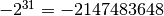 to  . One bit is used to store the sign of the integer so there are only 31 bits left—hence, the power of 31. In Python, a number is automatically treated as an integer if is written without a decimal point and it is within the bounds given above. This means that 23, written without a decimal point, is an integer and 23., written with a decimal point, is a floating point number. If an integer extends beyond the bounds of a simple integer, the it becomes a long integer, and is designated as such by an L following the last digit. Here are some examples of integer arithmetic:
. One bit is used to store the sign of the integer so there are only 31 bits left—hence, the power of 31. In Python, a number is automatically treated as an integer if is written without a decimal point and it is within the bounds given above. This means that 23, written without a decimal point, is an integer and 23., written with a decimal point, is a floating point number. If an integer extends beyond the bounds of a simple integer, the it becomes a long integer, and is designated as such by an L following the last digit. Here are some examples of integer arithmetic:
In [4]: 12*3
Out[4]: 36
In [5]: 4+5*6-(21*8)
Out[5]: -134
In [6]: 11/5
Out[6]: 2.2
In [7]: 11//5
Out[7]: 2
In [8]: 9734828*79372 # product of these two large integers
Out[8]: 772672768016L # is a long integer
For the binary operators +, -, *, and //, the output is an integer if the inputs are integers. The only exception is if the result of the calculation is out of the bounds of Python integers, in which case Python automatically converts the result to a long integer. The output of the division operator / is a floating point as of version 3 of Python. If an integer output is desired when two integers are divided, the floor division operator // must be used.
Floating point numbers are essentially rational numbers and can have a fractional part; integers, by their very nature, have no fractional part. In most versions of Python running on PCs or Macs, floating point numbers go between approximately and  . Here are some examples of integer arithmetic:
. Here are some examples of integer arithmetic:
In [9]: 12.*3.
Out[9]: 36.0
In [10]: 123.4*(-53.9)/sqrt(5.)
Out[10]: -2974.5338992050501
In [11]: 11./5.
Out[11]: 2.2
In [12]: 11.//5.
Out[12]: 2.0
In [13]: 11.%5.
Out[13]: 1.0
In [14]: 6.022e23*300.
Out[14]: 1.8066e+26
Note that the result of any operation involving only floating point numbers as inputs is a real number, even in the cases where the floor division // or remainder % operators are used. The last output also illustrates an alternative way of writing floating point numbers as a mantissa followed by and e or E followed by a power of 10: so 1.23e-12 is equivalent to 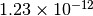.
We also sneaked into our calculations sqrt, the square root function. We will have more to say about functions in a few pages.
Complex numbers are written in Python as a sum of a real and imaginary part. For example, the complex number  is represented as 3-2j in Python where j represents
is represented as 3-2j in Python where j represents  . Here are some examples of complex arithmetic:
. Here are some examples of complex arithmetic:
In [15]: (2+3j)*(-4+9j)
Out[15]: (-35+6j)
In [16]: (2+3j)/(-4+9j)
Out[16]: (0.1958762886597938-0.3092783505154639j)
In [17]: sqrt(-3)
Out[17]: nan
In [18]: sqrt(-3+0j)
Out[18]: 1.7320508075688772j
Notice that to obtain the expected result or  , you must write the argument of the square root function as a complex number. Otherwise, Python returns nan (not a number).
, you must write the argument of the square root function as a complex number. Otherwise, Python returns nan (not a number).
If you multiply an integer by a floating point number, the result is a floating point number. Similarly, if you multiply a floating point number by a complex number, the result is a complex number. Python always promotes the result to the most complex of the inputs.
Python Modules¶
The Python computer language consists of a “core” language plus a vast collection of supplementary software that is contained in modules. Many of these modules come with the standard Python distribution and provide added functionality for performing computer system tasks. Other modules provide more specialized capabilities that not every user may want. You can think of these modules as a kind of library from which you can borrow according to your needs.
We will need three Python modules that are not part of the core Python distribution, but are nevertheless widely used for scientific computing. The three modules are
- NumPy
- is the standard Python package for scientific computing with Python. It provides the all-important array data structure, which is at the very heart of NumPy. In also provides tools for creating and manipulating arrays, including indexing and sorting, as well as basic logical operations and element-by-element arithmetic operations like addition, subtraction, multiplication, division, and exponentiation. It includes the basic mathematical functions of trigonometry, exponentials, and logarithms, as well vast collection of special functions (Bessel functions, etc.), statistical functions, and random number generators. It also includes a large number of linear algebra routines that overlap with those in SciPy, although the SciPy routines tend to be more complete. You can find more information about NumPy at http://docs.scipy.org/doc/numpy/reference/index.html.
- SciPy
- provides a wide spectrum of mathematical functions and numerical routines for Python. SciPy makes extensive use of NumPy arrays so when you import SciPy, you should always import NumPy too. In addition to providing basic mathematical functions, SciPy provides Python “wrappers” for numerical software written in other languages, like Fortran, C, or C++. A “wrapper” provides a transparent easy-to-use Python interface to standard numerical software, such as routines for doing curve fitting and numerically solving differential equations. SciPy greatly extends the power of Python and saves you the trouble of writing software in Python that someone else has already written and optimized in some other language. You can find more information about SciPy at http://docs.scipy.org/doc/scipy/reference/.
- MatPlotLib
- is the standard Python package for making two and three dimensional plots. MatPlotLib makes extensive use of NumPy arrays. You will make all of your plots in Python using this package. You can find more information about MatPlotLib at http://MatPlotLib.sourceforge.net/.
We will use these three modules extensively and therefore will provide introductions to their capabilities as we develop Python in this manual. The links above provide much more extensive information and you will certainly want to refer to them from time to time.
These modules, NumPy, MatPlotLib, and SciPy, are built into the IPython shell so we can use them freely in that environment. Later, when we introduce Python programs (or scripts), we will see that in those cases you must explicitly load these modules using the import command to have access to them.
Finally, we note that you can write your own Python modules. They are a convenient way of packaging and storing Python code so that you can reuse it. We defer learning about how to write modules until after we have learned about Python.
Python functions: a first look¶
A function in Python is similar to a mathematical function. In consists of a name and one or more arguments contained inside parentheses, and it produces some output. For example, the NumPy function sin(x) calculates the sine of the number x (where x is expressed in radians). Let’s try it out in the IPython shell:
In [1]: sin(0.5)
Out[1]: 0.47942553860420301
The argument of the function can be a number or any kind of expression whose output produces a number. For example, the function log(x) calculates the natural logarithm of x. All of the following expressions are legal and produce the expected output:
In [2]: log(sin(0.5))
Out[2]: -0.73516668638531424
In [3]: log(sin(0.5)+1.0)
Out[3]: 0.39165386283471759
In [4]: log(5.5/1.2)
Out[4]: 1.5224265354444708
Some NumPy functions¶
NumPy includes an extensive library of mathematical functions. In the table below, we list some of the most useful ones. A much more complete list is available at http://docs.scipy.org/doc/numpy/reference/ufuncs.html#math-operations.
Function Description sqrt(x) Square root of exp(x) Exponential of x, i.e. log(x) Natural log of x, i.e. log10(x) Base 10 log of degrees(x) Converts from radians to degrees
radians(x) Converts sin(x) Sine of cos(x) Cosine tan(x) Tangent arcsin(x) Arc sine (in radians) of arccos(x) Arc cosine (in radians) of arctan(x) Arc tangent (in radians) of fabs(x) Absolute value of round(x) Rounds a float to nearest integer floor(x) Rounds a float down to nearest integer ceil(x) Rounds a float up to nearest integer sign(x) -1 if , +1 if
, 0 if


The functions discussed here all have one input and one output. Python functions can, in general, have multiple inputs and multiple outputs. We will discuss these and other features of functions later when we take up functions in the context of user-defined functions.
Keyword arguments¶
In addition to regular arguments, Python functions can have keyword arguments (kwargs). Keyword arguments are optional arguments that need not be specified when a function is called. See Basic plotting for examples of the use of keyword arguments. For the moment, we don’t need them so we defer a full discussion of keyword arguments until we introduce them in the section on User-defined functions.
Variables¶
Names and the assignment operator¶
A variable is a name that is used to store data. It can be used to store different kinds of data, but here we consider the simplest case where the data is a single numerical value. Here are a few examples:
In [1]: a = 23
In [2]: p, q = 83.4, sqrt(2)
The equal sign “=” is the assignment operator. In the first statement, it assigns the value of 23 to the variable a. In the second statement it assigns a value of 83.4 to p and a value of 1.4142135623730951 to q. To be more precise, the name of a variable, such as a, is associated with a memory location in your computer; the assignment variable tells the computer to put a particular piece of data, in this case a numerical value, in that memory location. Note that Python stores the numerical value, not the expression used to generate it. Thus, q is assigned the 17-digit number 1.4142135623730951 generated by evaluating the expression sqrt(2), not with  . (Actually the value of q is stored as a binary, base 2, number using scientific notation with a mantissa and an exponent.)
. (Actually the value of q is stored as a binary, base 2, number using scientific notation with a mantissa and an exponent.)
Suppose we write
In [3]: b = a
In this case Python associates a new memory location with the name b, distinct from the one associated with a, and sets the value stored at that memory location to 23, the value of a. The following sequence of statements demonstrate that fact. Can you see how? Notice that simply typing a variable name and pressing Return prints out the value of the variable.
In [4]: a=23
In [5]: b=a
In [6]: a
Out[6]: 23
In [7]: b
Out[7]: 23
In [8]: a=12
In [9]: a
Out[9]: 12
In [10]: b
Out[10]: 23
The assignment variable works from right to left; that is, it assigns the value of the number on the right to the variable name on the left. Therefore, the statement “5=a” makes no sense in Python. The assignment operator “=” in Python is not equivalent to the equals sign “ ” we are accustomed to in algebra.
” we are accustomed to in algebra.
The assignment operator can be used to increment or change the value of a variable
In [11]: b = b+1
In [12]: b
Out[12]: 24
The statement, b = b+1 makes no sense in algebra, but in Python (and most computer languages), it makes perfect sense: it means “add 1 to the current value of b and assign the result to b.” This construction appears so often in computer programming that there is a special set of operators to perform such changes to a variable: +=, -=, *=, and /=. Here are some examples of how they work:
In [13]: c , d = 4, 7.92
In [14]: c += 2
In [15]: c
Out[15]: 6
In [16]: c *= 3
In [16]: c
Out[16]: 18
In [17]: d /= -2
In [17]: d
Out[17]: -3.96
In [18]: d -= 4
In [19]: d
Out[19]: -7.96
Verify that you understand how the above operations work.
Legal and recommended variable names¶
Variable names in Python must start with a letter, and can be followed by as many alphanumeric characters as you like. Spaces are not allowed in variable names. However, the underscore character “_” is allowed, but no other character that is not a letter or a number is permitted.
Recall that Python is case sensitive, so the variable a is distinct from the variable A.
We recommend giving your variables descriptive names as in the following calculation:
In [20]: distance = 34.
In [21]: time_traveled = 0.59
In [22]: velocity = distance/time_traveled
In [23]: velocity
Out[23]: 57.6271186440678
The variable names distance, time_traveled, and velocity immediately remind you of what is being calculated here. This is good practice. But so is keeping variable names reasonably short, so don’t go nuts!
Reserved words in Python¶
There are also some names or words that are reserved by Python for special purposes or functions. You must avoid using these names, which are provided here for your reference:
and del from not while as elif global or with assert else if pass yield break except import class exec in raise continue finally is return def for lambda try
In addition, you should not use function names, like sin, cos, and sqrt, defined in the SciPy, NumPy, or any other library that you are using.
Script files and programs¶
Performing calculations in the IPython shell is handy if the calculations are short. But calculations quickly become tedious when they are more than a few lines long. If you discover you made a mistake at some early step, for example, you may have to go back and retype all the steps subsequent to the error. The solution to this problem is to save your code in a file. Saving code in a file means you can just correct the error and rerun the code without having to retype it. Saving code can also be useful if you want to reuse it later, perhaps with different inputs.
When we save code in a computer file, we call the sequence of commands stored in the file a script or a program or sometimes a routine. Programs can become quite sophisticated and complex. Here we are only going to introduce the simplest features of programming by writing a very simple script. Much later, we will introduce some of the more advanced features of programming.
To write a script you need a text editor. In principle, any text editor will do, but it’s more convenient to use an editor that was designed for the task. We are going to use the Code Editor in the Canopy window that appears when you launch the Canopy application (see Canopy window). This editor, like most good programming editors, provides syntax highlighting, which color codes key words, comments, and other features of the Python syntax according to their function, and thus makes it easier to read the code and easier to spot programming mistakes. The Canopy code editor also provides syntax checking, much like a spell-checker in a word processing program, that identifies many coding errors. This can greatly speed the coding process. Tab completion also works in the Canopy Code Editor.
Scripting Example 1¶
Let’s work through an example to see how scripting works. Suppose you are going on a road trip and you would like to estimate how long the drive will take, how much gas you will need, and the cost of the gas. It’s a simple calculation. As inputs, you will need the distance of the trip, your average speed, the cost of gasoline, and the mileage of your car.
Writing a script to do these calculations is straightforward. First, launch Canopy and open the code editor. You should see a tab with the word untitled at the top left of the code editor pane (see Canopy window). If you don’t, go to the File menu and select New File. Use the mouse to place your cursor at the top of the code editor pane. Enter the following code and save the code in a file called myTrip.py in the PyProgs folder you created earlier. This stores your script (or program) on your computer’s disk. The exact name of the file is not important but the extension .py is essential. It tells the computer, and more importantly Python, that this is a Python program.
# Calculates time, gallons of gas used, and cost of gasoline for
# a trip
distance = 400. # miles
mpg = 30. # car mileage
speed = 60. # average speed
costPerGallon = 4.10 # price of gas
time = distance/speed
gallons = distance/mpg
cost = gallons*costPerGallon
The number (or hash) symbol # is the “comment” character in Python; anything on a line following # is ignored when the code is executed. Judicious use of comments in your code will make your code much easier to understand days, weeks, or months after the time you wrote it. Use comments generously.
Python ignores blank spaces or “white space” as it is sometimes called. The statement costPerGallon = 4.10 in the above program could equally well be written as costPerGallon=4.10 without the spaces before and after the = assignment operator; either way the statement means the same thing. Similarly, the white space after costPerGallon = 4.10 but before the comment (hash) symbol is also ignored by Python. The idea is that you should use white space to make your program more readable.
Now you are ready to run the code. Before doing so, you first need to use the IPython console to move to the PyProgs directory where the file containing the code resides. From the IPython console, use the cd command to move to the PyProgs directory. For example, you might type
In [1]: cd ~/Documents/PyProgs/
To run or execute a script, simply type run filename, which in this case means type run myTrip.py. When you run a script, Python simply executes the sequence of commands in the order they appear.
In [2]: run myTrip.py
Once you have run the script, you can see the values of the variables calculated in the script simply by typing the name of the variable. IPython responds with the value of that variable.
In [3]: time
Out[3]: 6.666666666666667
In [4]: gallons
Out[4]: 13.333333333333334
In [5]: cost
Out[5]: 54.666666666666664
You can change the number of digits IPython displays using the command %precision:
In [6]: %precision 2
Out[6]: u'%.2f'
In [7]: time
Out[7]: 6.67
In [8]: gallons
Out[8]: 13.33
In [9]: cost
Out[9]: 54.67
Typing %precision returns IPython to its default state; %precision %e causes IPython to display numbers in exponential format (scientific notation).
Note about printing¶
If you want your script to return the value of a variable (that is, print the value of the variable to your computer screen), use the print function. For example, at the end of our script, if we include the code
print(time)
print(gallons)
print(cost)
the script will return the values of the variables time, gallons, and cost that the script calculated. We will discuss the print function in much greater detail, as well as other methods for data output, in Chapter 4 on Input and Output.
Scripting Example 2¶
Let’s try another problem. Suppose you want to find the distance between two Cartesian coordinates 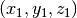 and  . The distance is given by the formula
. The distance is given by the formula
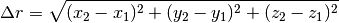
Now let’s write a script to do this calculation and save it in a file called twoPointDistance.py.
1 2 3 4 5 6 7 | # Calculates the distance between two 3d Cartesian coordinates
import numpy as np
x1, y1, z1 = 23.7, -9.2, -7.8
x2, y2, z2 = -3.5, 4.8, 8.1
dr = np.sqrt( (x2-x1)**2 + (y2-y1)**2 + (z2-z1)**2 )
|
We have introduced extra spaces into some of the expressions to improve readability. They are not necessary; where and whether you include them is largely a matter of taste.
There are two important differences between the code above and the commands we would have written into the IPython console to execute the same set of commands. The first is the statement on the second line
...
import numpy as np
...
and the second is the “np.” in front of the sqrt function on the last line. If you leave out the import numpy as np line and remove the np. in front of the sqrt function, you will get the following error message
----> 7 dr = sqrt( (x2-x1)**2 + (y2-y1)**2 + (z2-z1)**2 )
NameError: name 'sqrt' is not defined
The reason for the error is that the sqrt function is not a part of core Python. But it is a part of the NumPy module discussed earlier. To make the NumPy library available to the script, you need to add the statement import numpy as np. Then, when you call a NumPy function, you need to write the function with the np. prefix. Failure to do either will result in a error message. Now we can run the script.
In [10]: run twoPointDistance.py
In [11]: dr
Out[11]: 34.48
The script works as expected.
The reason we do not have to import NumPy when working in the IPython shell is that it is done automatically when the IPython shell is launched. Similarly, the package MatPlotLib is also automatically loaded (imported) when IPython is launched. However, when a script or program is executed, it is run on its own outside the IPython shell, even if the command to run the script is executed from the IPython shell.
Line continuation¶
From time to time, a line of code in a script will be unusually long, which can make the code difficult to read. In such cases, it is advisable to split the code onto several lines. For example, line 7 in the preceding script could be written as
dr = np.sqrt( (x2-x1)**2
+ (y2-y1)**2
+ (z2-z1)**2 )
You can generally continue an expression on another line in Python for code that is within a function argument, as it is here where the line is split inside the argument of the square root function. Note that the sub-expressions written on different lines are lined up. This is done solely to improve readability; Python does not require it. Nevertheless, as the whole point of splitting a line is to improve readability, it’s best to line up expressions so as to maximize readability.
You can split any Python line inside of parentheses, brackets, and braces, as illustrated above. You can split it other places as well by using the backslash (\) character. For example, the code
a = 1 + 2 \
+ 3 + 4
is equivalent to
a = 1 + 2 + 3 + 4
So you can use backslash character (\) of explicit line continuation when implicit line continuation won’t work.
Importing Modules¶
We saw in Example 2 in the last section that we needed to import the NumPy module in order to use the sqrt function. Indeed the NumPy library contains many useful functions, some of which are listed in section Python functions: a first look. Whenever any NumPy functions are used, the NumPy library must be loaded using an import statement.
There are a few ways to do this. The one we generally recommend is to use the import as implementation that we used in Example 2. For the main NumPy and MatPlotLib libraries, this is implemented as follows:
import numpy as np
import maplotlib.pyplot as plt
These statements import the entire library named in the import statement and associate a prefix with the imported library: np and plt in the above examples. Functions from within these libraries are then called by attaching the appropriate prefix with a period before the function name. Thus, the functions sqrt or sin from the NumPy library are called using the syntax np.sqrt or np.sin; the functions plot or xlabel from the maplotlib.pyplot would be called using plt.plot or plt.xlabel.
Alternatively, the NumPy and MatPlotLib libraries can be called simply by writing
import numpy
import maplotlib.pyplot
When loaded this way, the sqrt function would be called as numpy.sqrt and the plot function would be called as MatPlotLib.pyplot.plot. The import as syntax allows you to define nicknames for numpy and maplotlib.pyplot. Nearly any nickname can be chosen, but the Python community has settled on the nicknames np and plt for numpy and maplotlib.pyplot, so you are advised to stick with those. Using the standard nicknames makes your code more readable.
You can also import a single functions or subset of functions from a module without importing the entire module. For example, suppose you wanted to import just the natural log function log from NumPy. You could write
from numpy import log
To use the log function in a script, you would write
a = log(5)
which would assign the value 1.6094379124341003 to the variable a. If you wanted to import the three functions, log, sin, and cos, you would write
from numpy import log, sin, cos
and would similarly use them without an “np.” prefix. In general, we do not recommend using the the from module import ... way of importing functions. When reading code, it makes it harder to determine from which modules functions are imported, and can lead to clashes between similarly named functions from different modules. Nevertheless, you will see the form used in programs you encounter on the web and elsewhere so it is important to understand the syntax.
Getting help: documentation in IPython shell¶
Help is never far away when you are running the IPython shell. To obtain information on any valid Python or NumPy function, and many MatPlotLib functions, simply type help( function ), as illustrated here
In [1]: help(range)
range([start,] stop[, step]) -> list of integers
Return a list containing an arithmetic progression of integers.
range(i, j) returns [i, i+1, i+2, ..., j-1]; start (!) defaults
to 0. When step is given, it specifies the increment (or
decrement). For example, range(4) returns [0, 1, 2, 3]. The
end point is omitted! These are exactly the valid indices for a
list of 4 elements.
Often, the information provided can be quite extensive and you might find it useful to clear the IPython window with the clear command so you can easily scroll back to find the beginning of the documentation. You may have also noticed that when you type the name of a function plus the opening parenthesis, IPython displays a window showing the first dozen lines or so of the documentation on that function.
Programming is a detail-oriented activity¶
Now that you have a little experience with Python and computer programming, it’s time for an important reminder: Programming is a detail-oriented activity. To be good at computer programming, to avoid frustration when programming, you must pay attention to details. A misplaced or forgotten comma or colon can keep your code from working. Note that I did not say it can “keep your code from working well”; it can keep your code from working at all! Worse still, little errors can make your code give erroneous answers, where your code appears to work, but in fact does not! So pay attention to the details!
This raises a second point: sometimes your code will run but give the wrong answer because of a programming error or because of a more subtle error in your algorithm. For this reason, it is important to test your code to make sure it is behaving properly. Test it to make sure it gives the correct answers for cases where you already know the correct answer or where you have some independent means of checking it. Test it in limiting cases, that is, for cases that are at the extremes of the sets of parameters you will employ. Always test your code; this is a cardinal rule of programming.
Exercises¶
A ball is thrown vertically up in the air from a height
 above the ground at an initial velocity
above the ground at an initial velocity  . Its subsequent height
. Its subsequent height  and velocity
and velocity  are given by the equations
are given by the equations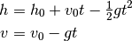
where
 is the acceleration due to gravity in
is the acceleration due to gravity in  . Write a script that
. Write a script that
finds the height and velocity at a time  after the ball is thrown. Start the script by setting
after the ball is thrown. Start the script by setting  (meters) and 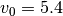 (m/s) and have your script print out the values of height and velocity (see Note about printing). Then use the script to find the height and velocity after 0.5 seconds. Then modify your script to find them after 2.0 seconds.
(meters) and 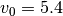 (m/s) and have your script print out the values of height and velocity (see Note about printing). Then use the script to find the height and velocity after 0.5 seconds. Then modify your script to find them after 2.0 seconds.
Write a script that defines the variables 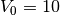, 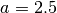, and
 , and then evaluates the expression
, and then evaluates the expression
Then find
 for
for  and print it out (see Note about printing). Then find for 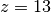 by changing the value of
and print it out (see Note about printing). Then find for 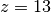 by changing the value of  in your script.
in your script.Write a single Python script that calculates the following expressions:

- 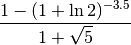

After running your script in the IPython shell, typing a, b, or c at the IPython prompt should yield the value of the expressions in (a), (b), or (c), respectively.
A quadratic equation with the general form

has two solutions given by the quadratic formula
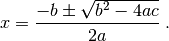
- Given
 ,
,  , and
, and  as inputs, write a script that gives the numerical values of the two solutions. Write the constants , , and as floats, and show that your script gives the correct solutions for a few test cases when the solutions are real numbers, that is, when the discriminant
as inputs, write a script that gives the numerical values of the two solutions. Write the constants , , and as floats, and show that your script gives the correct solutions for a few test cases when the solutions are real numbers, that is, when the discriminant  . Use the print function in your script, discussed at the end of Section 2.8.1 Scripting Example 1, to print out your two solutions.
. Use the print function in your script, discussed at the end of Section 2.8.1 Scripting Example 1, to print out your two solutions. - Written this way, however, your script gives an error message when the solutions are complex. For example, see what happens when 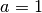,
 , and 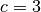. You can fix this using statements in your script like a = a+0j after setting a to some float value. Thus, you can make the script work for any set of real inputs for , , and . Again, use the print function to print out your two solutions.
, and 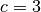. You can fix this using statements in your script like a = a+0j after setting a to some float value. Thus, you can make the script work for any set of real inputs for , , and . Again, use the print function to print out your two solutions.
- Given